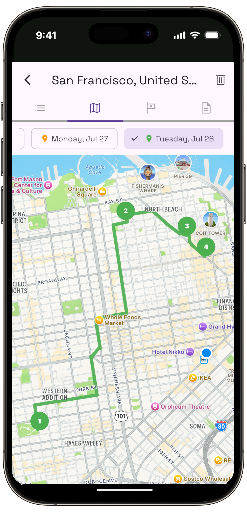

Budapest · 3 days
3 Days in Budapest: What You Actually Have to See
Budapest is two cities facing each other across the Danube, and the famous views are of the opposite bank. Buda's castle hill faces east, so the morning sun lights it and you see it best from Pest. Pest's Parliament faces west, so the evening sun lights it and you see it best from the Buda hills. That decides the shape of every day here: the flat Pest side in the morning, a hill on the Buda side at the end of the afternoon, and the river after dark when both banks are lit.
Three days covers Budapest's essentials without rushing. That means the Parliament, Castle Hill and the Fisherman's Bastion, St Stephen's Basilica, Andrássy Avenue and Heroes' Square, a thermal bath, the Jewish Quarter and its synagogue, and two sunsets from two different hills. The Danube Bend and Lake Balaton need extra days.
The Danube runs north to south through the middle of the city. On the west bank, Buda rises in wooded hills, with the castle district along a ridge directly above the water. On the east bank, Pest is completely flat, and the Parliament sits right on the river's edge. Everyone comes for the view from each bank across to the other, and the sun moves across it in a fixed direction every day.
In the morning the light comes from behind Pest and falls on the Buda side: the palace, the white turrets of the Fisherman's Bastion, the spire of Matthias Church. Stand on the Pest embankment and they are lit in front of you. By late afternoon the sun has swung behind the Buda hills and turned onto the Parliament's long river façade. From the Buda heights it is lit gold under you, and the sun sets at your back without getting in your eyes. Do it the other way around and you spend both views squinting at a silhouette.
So each day below starts in Pest and finishes on a Buda hill or on the water. The day-to-day details depend on which day of the week it is. The Dohány Street Synagogue is shut on Saturdays, the Great Market Hall keeps short hours on Sundays, and the Parliament sells its tickets online and runs out in summer.
Pest in the morning, Buda at dusk. Buda faces east and is lit in the morning, so you look at it from Pest. The Parliament faces west and is lit in the evening, so you look at it from Castle Hill or Gellért Hill. It also helps that both evening viewpoints are free once the day-ticket hours end.
Day 1 — The Parliament, the embankment, and Castle Hill at sunset
Book the Parliament first. Advance tickets for the 45-minute guided tour are sold only online, through the Parliament's ticketing partner, and the visitor centre's same-day allocation is small and queued for. In summer, English-language slots go weeks ahead. Take a morning tour. The interior is the ceremonial staircase, the dome hall where the Holy Crown is kept under guard, and the old upper house chamber. Tours can shift on days when parliament is sitting.
Coming out, walk a few minutes south along the river to the Shoes on the Danube Bank: sixty pairs of iron shoes set into the embankment where Arrow Cross militiamen shot Jews into the river in 1944 and 1945, after making them take their shoes off. From here, look across the water. This is the morning view of Castle Hill, lit from your side, with the palace dome, the Bastion and Matthias Church in one line.
Keep walking south along the embankment to the Chain Bridge, and cross it on foot. The Castle Hill funicular starts on the far side. It is a short and pricey ride, and it shuts on alternate Mondays for maintenance and for a week or two each spring and autumn. Bus 16 from the bridgehead also goes up, and so do the stepped paths on the hillside, which are steep but short.
Spend the afternoon on the hill. Matthias Church has a tiled roof in coloured patterns and an interior painted in gold and dark colours on every surface; it charges entry. The palace at the southern end holds the Hungarian National Gallery and the Budapest History Museum. If the museums are not your thing, the view from the palace terrace over the river is free.
Finish at the Fisherman's Bastion. The lower terraces are free at any hour. The upper turrets charge during the day, with a kiosk on site, but the ticket window closes in the evening (7pm for most of the year, 9pm in summer), and after that the upper level is free as well. It faces due east over the river, and around sunset the Parliament across the water is the brightest building in the city.
The must-sees
Pest bank in the morning, cross the river at midday, and arrive on Castle Hill in time for the evening light.
Day 2 — Andrássy Avenue, Széchenyi, and the Citadella
Start at St Stephen's Basilica, a few blocks into Pest from the river. The church is huge and the panorama walk around the outside of the dome is the best view of Pest from within Pest. Then walk up Andrássy Avenue, the long boulevard toward the City Park, with the State Opera on the way. The first underground railway on the European mainland runs beneath it. That is the yellow M1 line, and it still runs, with small carriages and tiled stations, if your feet give up halfway.
Halfway up Andrássy, at number 60, is the House of Terror, in the building used as headquarters first by the Arrow Cross and then by the communist secret police. It is a heavy hour, and the cellars where prisoners were held are part of the visit. It is a must if 20th-century history is why you came. Otherwise, walk past.
The avenue ends at Heroes' Square, and the City Park behind it has the Széchenyi Thermal Bath. This is the bath to go to now. The Gellért, the other famous one, closed in October 2025 for a rebuild that will keep it shut until 2028 at the earliest. Széchenyi is a yellow neo-baroque palace with outdoor pools open all year, and they are best in cold weather, when steam rises off the water. Book online to skip the ticket queue, bring flip-flops and a towel or rent them, and give it two to three hours. The middle of the day is fine here, since there is no view to catch.
Late afternoon, go back to Buda for the second sunset, from Gellért Hill. The Citadella at the top was closed for eleven years and reopened in spring 2026 as a free public park, with the Liberty Statue restored and terraces overlooking the river. From here the view runs north along the Danube with every bridge in it and the Parliament at the far end, lit from behind you. Walk up from the Buda end of Elisabeth Bridge, past the statue of St Gellért. It is steep the whole way, so start well before sunset.
The must-sees
A morning walk up the avenue on the flat side, an afternoon in warm water, then over the river and up again for the light.
Day 3 — The Jewish Quarter, the market, and the river after dark
The old Jewish Quarter in the seventh district holds the Dohány Street Synagogue, the largest in Europe, with the Hungarian Jewish Museum and a memorial garden behind it where victims of the 1944–45 ghetto are buried. A metal weeping willow there carries names of the murdered on its leaves. The complex is closed on Saturdays and on Jewish holidays. It closes early on Fridays, and the ticket office shuts about an hour before the doors do. If your third day is a Saturday, swap this day with day two.
The streets around the synagogue are the ruin-bar district. Szimpla Kert, the best known of them, is a derelict apartment block filled with junk furniture and turned into a bar. It is open in the daytime, it is free to walk around, and seeing it before the crowds is half the point.
Head south to the Great Market Hall by the Liberty Bridge for lunch. Fruit, paprika and sausage on the ground floor, food counters and souvenirs on the gallery upstairs. It runs early-morning hours through the week and a shorter day on Saturday. On Sunday it opens only from 10am to 4pm, and many stalls stay shut. It is closed on public holidays.
The last evening belongs on the river. Once it is dark, both banks are lit at the same time, which is the one view neither hill gives you. A boat cruise does this well and costs money. Tram 2 does almost the same for the price of a ticket, running along the Pest embankment between the Parliament and the market hall with the illuminated castle across the water. Walk back over the Chain Bridge to finish.
The must-sees
The one day that does not end on a hill. After dark, the river is the view.
Where the light is, by time of day
| Time | Stand here | Looking at |
|---|---|---|
| Morning | Pest embankment, by the Parliament | Castle Hill, the Bastion and Matthias Church, lit from behind you |
| Late afternoon to sunset | Fisherman's Bastion or the Citadella | The Parliament and the Pest riverfront, lit gold |
| After dark | On the river, the Chain Bridge or tram 2 | Both banks illuminated at once |
What three days does not cover
Worth doing, but each one costs a day or a half day that this plan has given to something else:
- The Gellért Baths. Closed since October 2025 and not expected back before 2028. Itineraries still listing it were not checked. Széchenyi is the bath for this trip.
- A second bath. Rudas and Lukács are both good, but two bath sessions in three days means losing a hill or the Jewish Quarter.
- The Danube Bend. Szentendre, Visegrád and Esztergom make a full day upriver. Save it for a fourth day.
- Paying for the Fisherman's Bastion. The upper turrets cost money only during the day. Come at sunset and the same view is free.
- Margaret Island. A long park in the middle of the river. Pleasant, but it has no view of either bank as good as the two hills.
- A ruin-bar night that runs past 2am. Fine on the last night. Before a Parliament tour, a bad idea.
Common questions about 3 days in Budapest
Is 3 days enough for Budapest?
Yes for the essentials. Three days covers the Parliament, Castle Hill and the Fisherman's Bastion, St Stephen's Basilica, Andrássy Avenue, the Széchenyi Bath, the Jewish Quarter and two sunsets from the Buda hills. It does not cover the Danube Bend or a second thermal bath.
Is the Gellért Bath open?
No. The Gellért Baths closed on 1 October 2025 for a full renovation and are not expected to reopen before 2028. The Széchenyi Bath in the City Park is open and is the one to visit instead.
When is the best time to visit the Fisherman's Bastion?
Late afternoon into sunset. The Bastion faces east, so the evening sun lights the Parliament across the river instead of shining in your eyes. The upper terraces are also free once the daytime ticket window closes, at 7pm for most of the year and 9pm in summer. The lower terraces are free at any time.
Do you need to book the Parliament tour in advance?
Yes. Advance tickets for the guided tour are sold only online. The visitor centre has a small same-day allocation with long queues, and English-language tours in summer can sell out weeks ahead.
Is the Dohány Street Synagogue open on Saturdays?
No. It is closed on Saturdays and on Jewish holidays, and it closes early on Fridays. The ticket office closes about an hour before visiting hours end, so arrive early.
Should you stay in Buda or Pest?
Pest, for a three-day trip. Most mornings in this plan start on the Pest side, and the restaurants, the Jewish Quarter and the metro lines are there. Buda is quieter and hillier, and you go there for the evening views.
Is a Danube river cruise worth it?
After dark, yes, because it is the only way to see both illuminated banks at once. The cheaper alternative is tram 2, which runs along the Pest embankment with the lit castle across the water.
Tailored to your trip
Travelling to Budapest? Plan your trip around your real arrival and departure times.

